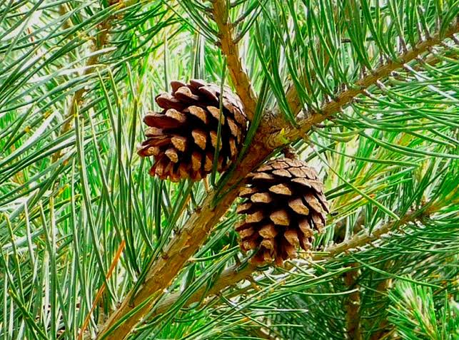
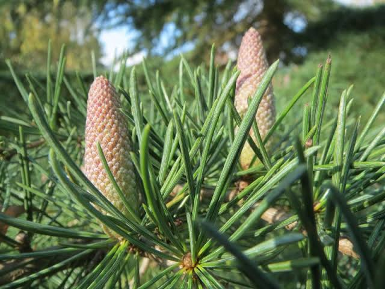
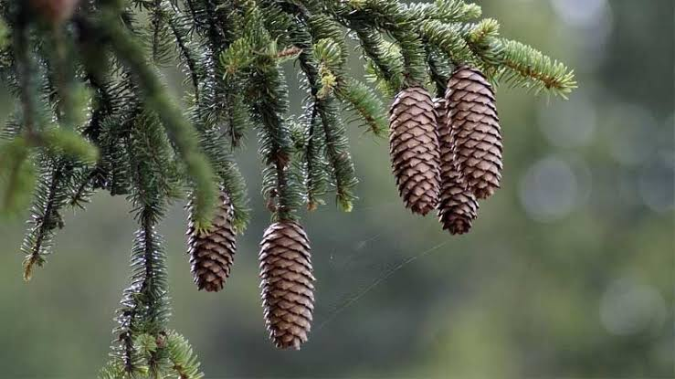
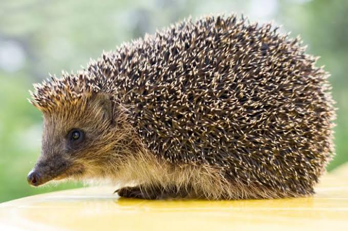
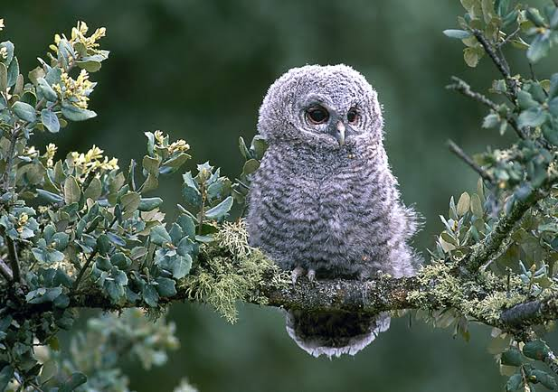
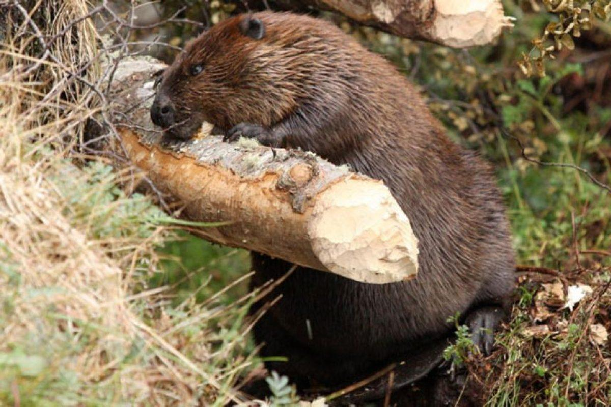
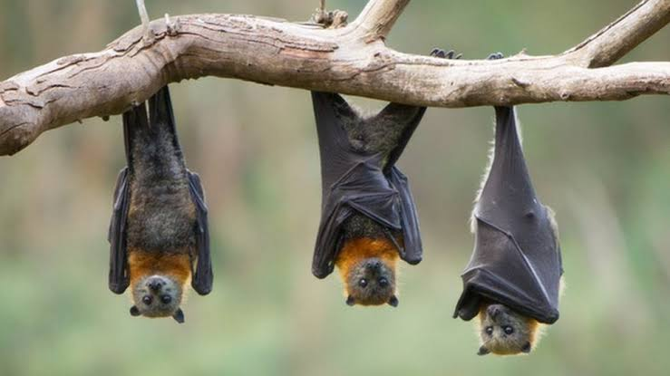

Bosque De Coniferas
Un bosque de coníferas o también llamado bosque frío es un área boscosa constituida por coníferas que van de hasta 100 m de altura y asociada a climas fríos o templados debido a las precipitaciones. En él, abundan árboles muy altos; pinos y abetos, que se cubren de nieve durante la época invernal. Además, en esta clase de bosques es muy común la presencia de cipreses, cedros, píceas y abetos. Y a esto le sumamos los helechos y arbustos, que también son propios de este tipo de ecosistema. Ahora bien, los árboles de coníferas son aquellos que cuentan con semillas en forma de cono. Se caracterizan por no tener frutos, sino piñones. Agreguemos el hecho de que las hojas de estos árboles son perennes y se caracterizan por tener forma de aguja. Las cualidades propias de estas hojas les permite tener una duración de hasta siete años, motivo por el que la copa se va renovando en etapas, y no cada año, como ocurre con buena parte de las especies.
La flora de estos bosques suelen organizarse en dos capas bien definidas: dosel y sotobosque. El dosel está formado por la masa que forman las copas de los árboles, mientras que el sotobosque está formado por coníferas pequeñas, arbustos y helechos más próximos al suelo.
Los pinos son un género de árboles muy tolerantes a condiciones extremas de clima, esto, por su estructura celular, pueden alcanzar los 30 metros de altura por el tronco recto sobre el que disponen varios pisos de ramas en posición horizontal sin embargo, estos árboles no solo pueden tener copa en forma de pirámide, sino también, redondeada. Son una fuente de alimento para las aves, las ardillas y otros roedores. Asimismo, los pinos son la fuente de preferida de madera de los habitantes de zonas boscosas por dos razones: En primera porque crecen muy rápido y en segunda porque son rectos. Existen más de 100 especies de pinos y se encuentran en zonas más variadas.

El cedro es un árbol de raíces fuertes que pueden llegar a alcanzar los 20 o 40 metros de altura. Es un género de coníferas pináceas, con un tronco grueso en forma piramidal, de hoja perenne, cuya característica principal es su aroma agradable. La estructura de la semilla femenina es en forma de cono, conocido en algunos lugares como "piña". Sus hojas con en forma de agujas de entre 2 y 4 cm de longitud que forman racimos densos a lo largo de la rama

Los abetos se caracterizan por su gran altura: pueden superar los 50 metros y llegar, en ciertos casos, hasta los 80 metros. Su tronco crece derecho y finaliza en una copa de forma cónica. El fruto del abeto es una piña cilindrica. Lo habitual es que el abeto crezca en terrenos elevados y de climas más bien frío, por sus características, los abetos se asemejan a los cedros. Sus hojas son planas, presentan bastante rigidez y se identifican también por su pequeño tamaño.

Muchos bosques de coníferas se asientan en zonas montañosas o de clima frío. Estas condiciones climáticas determinan en gran parte la fauna que podrán
habitar este tipo de de bosque. Por ejemplo, cuando el clima es frío, suele ser habitual la presencia de mamíferos con gruesas capas de pelaje. Es frecuente encontrar especies de castores, puercoespines, conejos, murcielagos, musarañas entre otros más, los cuales, viven en el sotobosque.
Los animales más numerosos, sin embargo, son las aves, que pueden ocupar tanto el sotobosque como el dosel. Estas aves tienen diferentes tipos de adaptaciones, ya que su fuente de alimento puede ser variada: pueden alimentarse de las semillas de las coníferas (por ejemplo los gorriones), de insectos (los petirrojos) o de pequeños mamíferos (las aves rapces
como cárabos, lechuzas, etc).
|  |  |
|  |  |